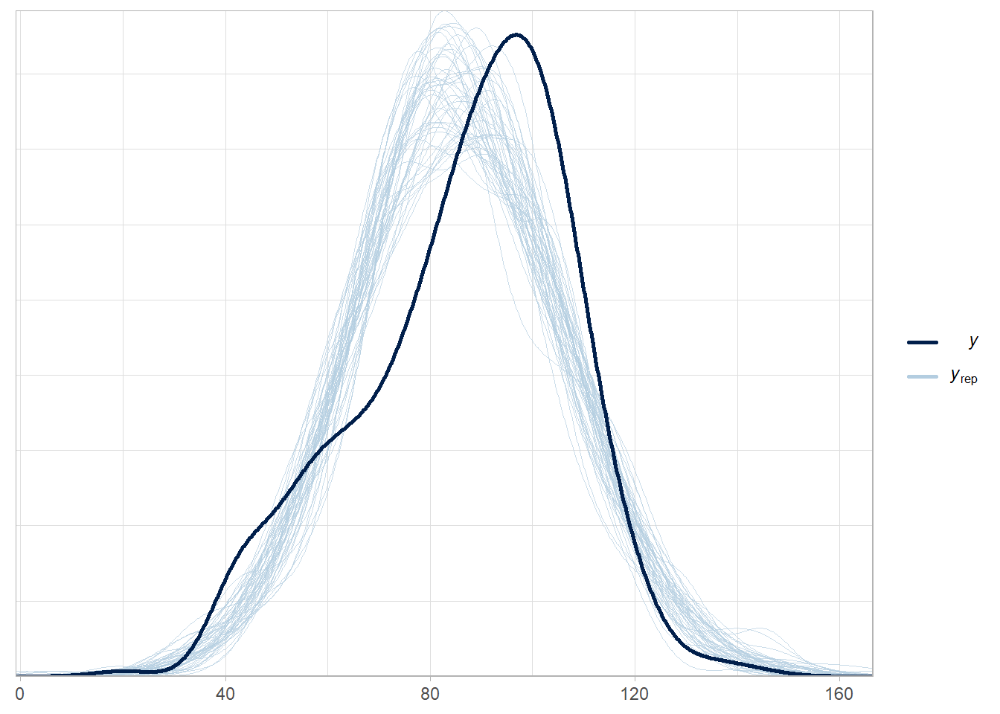
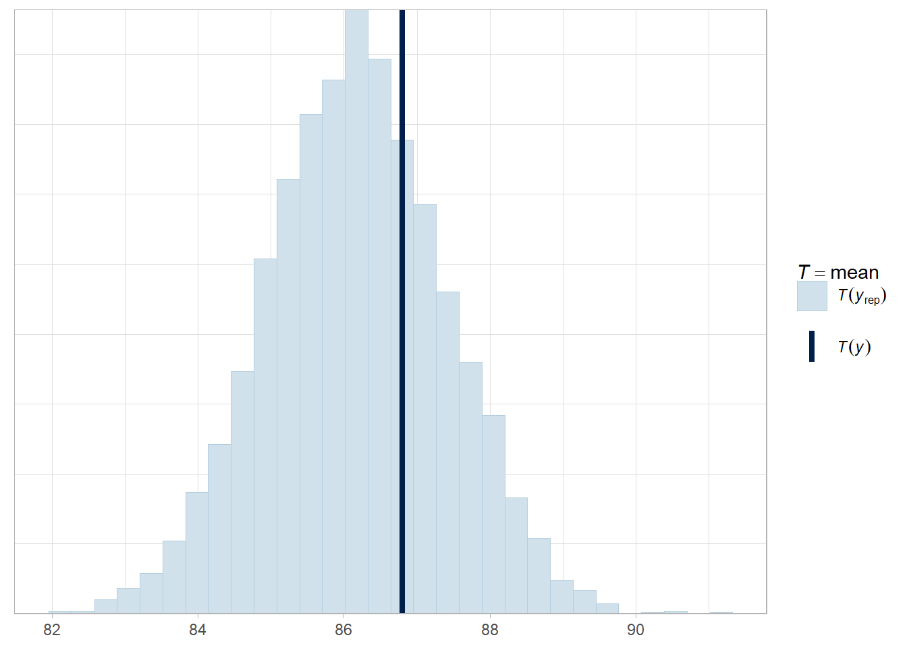
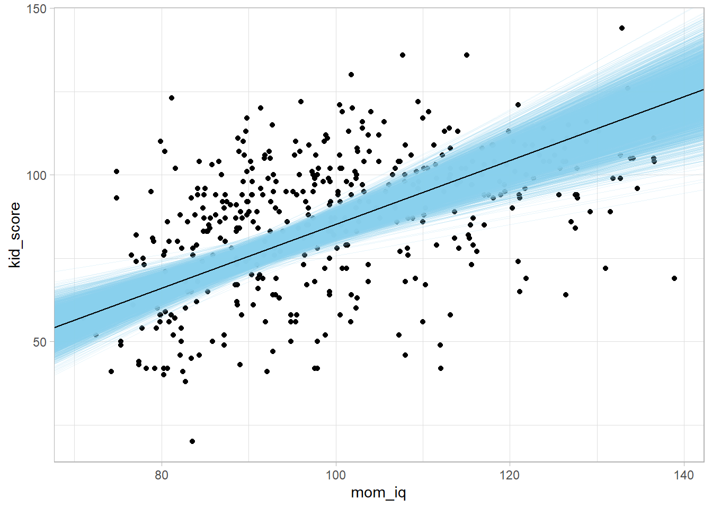

Chapter 8 Bayesian Regression
8.1 Compared to Frequentist Regression
This section is my notes from DataCamp course Bayesian Regression Modeling with rstanarm. The course refers to Andrew Gelman’s book “Bayesian Data Analysis” (Gelman2013?). It is an intuitive approach to Bayesian inference.
Frequentist regression estimates fixed population parameters from a random sample of data whose test statistics are random variables. The Bayesian approach to regression works the other direction: Bayesian regression characterizes the distribution of the random variable population parameters from the evidence of a fixed sample of data.
The frequentist p-value is the probability of observing a test statistic of equal or greater magnitude if the null hypothesis is true. The 95% confidence interval has a 95% probability of capturing the population value (repeated sampling would produce similar CIs, 95% of which would capture the population value). The 95% credible interval captures the confidence the value falls within the range. There is an important difference here. In the Bayesian framework, you can state the probability the parameter value falls with a specified range, but there is no equivalent in frequentist regression.
Bayesian regression uses maximum likelihood to fit the model because the integral in the denominator (the marginal distribution) cannot (or is difficult) to calculate analytically. Instead, the algorithm samples from the posterior distribution in groups (chains). Each chain begins at a random location. Each sample (iteration) moves toward the area where the combination of likelihood and prior indicates a high probability of the true parameter value residing. The more iterations per chain, the larger the total sample size, and more robust the outcome. The chains need to converge to have a stable estimate. The iterations prior to convergence are sometimes referred to as the “warm up” and are not included in the posterior distribution estimate. By default, the rstanarm package estimates 4 chains, each with 2,000 iterations, and the first 1,000 set aside as warm-up. The final posterior combines the chains, so is composed of 4,000 iterations.
A Bayesian model estimates each coefficient parameter and model error with a prior*likelihood/marginal dist = posterior framework.
##
## SAMPLING FOR MODEL 'continuous' NOW (CHAIN 1).
## Chain 1:
## Chain 1: Gradient evaluation took 0.000109 seconds
## Chain 1: 1000 transitions using 10 leapfrog steps per transition would take 1.09 seconds.
## Chain 1: Adjust your expectations accordingly!
## Chain 1:
## Chain 1:
## Chain 1: Iteration: 1 / 2000 [ 0%] (Warmup)
## Chain 1: Iteration: 200 / 2000 [ 10%] (Warmup)
## Chain 1: Iteration: 400 / 2000 [ 20%] (Warmup)
## Chain 1: Iteration: 600 / 2000 [ 30%] (Warmup)
## Chain 1: Iteration: 800 / 2000 [ 40%] (Warmup)
## Chain 1: Iteration: 1000 / 2000 [ 50%] (Warmup)
## Chain 1: Iteration: 1001 / 2000 [ 50%] (Sampling)
## Chain 1: Iteration: 1200 / 2000 [ 60%] (Sampling)
## Chain 1: Iteration: 1400 / 2000 [ 70%] (Sampling)
## Chain 1: Iteration: 1600 / 2000 [ 80%] (Sampling)
## Chain 1: Iteration: 1800 / 2000 [ 90%] (Sampling)
## Chain 1: Iteration: 2000 / 2000 [100%] (Sampling)
## Chain 1:
## Chain 1: Elapsed Time: 0.036 seconds (Warm-up)
## Chain 1: 0.058 seconds (Sampling)
## Chain 1: 0.094 seconds (Total)
## Chain 1:
##
## SAMPLING FOR MODEL 'continuous' NOW (CHAIN 2).
## Chain 2:
## Chain 2: Gradient evaluation took 1.4e-05 seconds
## Chain 2: 1000 transitions using 10 leapfrog steps per transition would take 0.14 seconds.
## Chain 2: Adjust your expectations accordingly!
## Chain 2:
## Chain 2:
## Chain 2: Iteration: 1 / 2000 [ 0%] (Warmup)
## Chain 2: Iteration: 200 / 2000 [ 10%] (Warmup)
## Chain 2: Iteration: 400 / 2000 [ 20%] (Warmup)
## Chain 2: Iteration: 600 / 2000 [ 30%] (Warmup)
## Chain 2: Iteration: 800 / 2000 [ 40%] (Warmup)
## Chain 2: Iteration: 1000 / 2000 [ 50%] (Warmup)
## Chain 2: Iteration: 1001 / 2000 [ 50%] (Sampling)
## Chain 2: Iteration: 1200 / 2000 [ 60%] (Sampling)
## Chain 2: Iteration: 1400 / 2000 [ 70%] (Sampling)
## Chain 2: Iteration: 1600 / 2000 [ 80%] (Sampling)
## Chain 2: Iteration: 1800 / 2000 [ 90%] (Sampling)
## Chain 2: Iteration: 2000 / 2000 [100%] (Sampling)
## Chain 2:
## Chain 2: Elapsed Time: 0.037 seconds (Warm-up)
## Chain 2: 0.061 seconds (Sampling)
## Chain 2: 0.098 seconds (Total)
## Chain 2:
##
## SAMPLING FOR MODEL 'continuous' NOW (CHAIN 3).
## Chain 3:
## Chain 3: Gradient evaluation took 1.2e-05 seconds
## Chain 3: 1000 transitions using 10 leapfrog steps per transition would take 0.12 seconds.
## Chain 3: Adjust your expectations accordingly!
## Chain 3:
## Chain 3:
## Chain 3: Iteration: 1 / 2000 [ 0%] (Warmup)
## Chain 3: Iteration: 200 / 2000 [ 10%] (Warmup)
## Chain 3: Iteration: 400 / 2000 [ 20%] (Warmup)
## Chain 3: Iteration: 600 / 2000 [ 30%] (Warmup)
## Chain 3: Iteration: 800 / 2000 [ 40%] (Warmup)
## Chain 3: Iteration: 1000 / 2000 [ 50%] (Warmup)
## Chain 3: Iteration: 1001 / 2000 [ 50%] (Sampling)
## Chain 3: Iteration: 1200 / 2000 [ 60%] (Sampling)
## Chain 3: Iteration: 1400 / 2000 [ 70%] (Sampling)
## Chain 3: Iteration: 1600 / 2000 [ 80%] (Sampling)
## Chain 3: Iteration: 1800 / 2000 [ 90%] (Sampling)
## Chain 3: Iteration: 2000 / 2000 [100%] (Sampling)
## Chain 3:
## Chain 3: Elapsed Time: 0.035 seconds (Warm-up)
## Chain 3: 0.07 seconds (Sampling)
## Chain 3: 0.105 seconds (Total)
## Chain 3:
##
## SAMPLING FOR MODEL 'continuous' NOW (CHAIN 4).
## Chain 4:
## Chain 4: Gradient evaluation took 6e-06 seconds
## Chain 4: 1000 transitions using 10 leapfrog steps per transition would take 0.06 seconds.
## Chain 4: Adjust your expectations accordingly!
## Chain 4:
## Chain 4:
## Chain 4: Iteration: 1 / 2000 [ 0%] (Warmup)
## Chain 4: Iteration: 200 / 2000 [ 10%] (Warmup)
## Chain 4: Iteration: 400 / 2000 [ 20%] (Warmup)
## Chain 4: Iteration: 600 / 2000 [ 30%] (Warmup)
## Chain 4: Iteration: 800 / 2000 [ 40%] (Warmup)
## Chain 4: Iteration: 1000 / 2000 [ 50%] (Warmup)
## Chain 4: Iteration: 1001 / 2000 [ 50%] (Sampling)
## Chain 4: Iteration: 1200 / 2000 [ 60%] (Sampling)
## Chain 4: Iteration: 1400 / 2000 [ 70%] (Sampling)
## Chain 4: Iteration: 1600 / 2000 [ 80%] (Sampling)
## Chain 4: Iteration: 1800 / 2000 [ 90%] (Sampling)
## Chain 4: Iteration: 2000 / 2000 [100%] (Sampling)
## Chain 4:
## Chain 4: Elapsed Time: 0.051 seconds (Warm-up)
## Chain 4: 0.058 seconds (Sampling)
## Chain 4: 0.109 seconds (Total)
## Chain 4:##
## Model Info:
## function: stan_glm
## family: gaussian [identity]
## formula: kid_score ~ mom_iq
## algorithm: sampling
## sample: 4000 (posterior sample size)
## priors: see help('prior_summary')
## observations: 434
## predictors: 2
##
## Estimates:
## mean sd 10% 50% 90%
## (Intercept) 25.8 5.9 18.4 25.8 33.4
## mom_iq 0.6 0.1 0.5 0.6 0.7
## sigma 18.3 0.6 17.5 18.3 19.1
##
## Fit Diagnostics:
## mean sd 10% 50% 90%
## mean_PPD 86.8 1.2 85.2 86.8 88.4
##
## The mean_ppd is the sample average posterior predictive distribution of the outcome variable (for details see help('summary.stanreg')).
##
## MCMC diagnostics
## mcse Rhat n_eff
## (Intercept) 0.1 1.0 4119
## mom_iq 0.0 1.0 4066
## sigma 0.0 1.0 3892
## mean_PPD 0.0 1.0 4059
## log-posterior 0.0 1.0 1864
##
## For each parameter, mcse is Monte Carlo standard error, n_eff is a crude measure of effective sample size, and Rhat is the potential scale reduction factor on split chains (at convergence Rhat=1).## # A tibble: 2 × 3
## term estimate std.error
## <chr> <dbl> <dbl>
## 1 (Intercept) 25.8 5.94
## 2 mom_iq 0.610 0.0593## 5% 95%
## (Intercept) 16.1471464 35.391103
## mom_iq 0.5149525 0.706094
## sigma 17.3167852 19.328867By default, rstanarm priors are normal distributions with mean 0 and variance equal to a scaler multiple of the data variance.
## Priors for model 'stan_mdl'
## ------
## Intercept (after predictors centered)
## Specified prior:
## ~ normal(location = 87, scale = 2.5)
## Adjusted prior:
## ~ normal(location = 87, scale = 51)
##
## Coefficients
## Specified prior:
## ~ normal(location = 0, scale = 2.5)
## Adjusted prior:
## ~ normal(location = 0, scale = 3.4)
##
## Auxiliary (sigma)
## Specified prior:
## ~ exponential(rate = 1)
## Adjusted prior:
## ~ exponential(rate = 0.049)
## ------
## See help('prior_summary.stanreg') for more details## [1] 51.02672## [1] 3.401781You can override the priors to set your own:
stan_mdl <- stan_glm(kid_score ~ mom_iq, data = kidiq,
prior_intercept = normal(location = 0, scale = 10, autoscale = FALSE),
prior = normal(location = 0, scale = 2.5, autoscale = FALSE),
prior_aux = exponential(rate = 1, autoscale = FALSE))##
## SAMPLING FOR MODEL 'continuous' NOW (CHAIN 1).
## Chain 1:
## Chain 1: Gradient evaluation took 1.4e-05 seconds
## Chain 1: 1000 transitions using 10 leapfrog steps per transition would take 0.14 seconds.
## Chain 1: Adjust your expectations accordingly!
## Chain 1:
## Chain 1:
## Chain 1: Iteration: 1 / 2000 [ 0%] (Warmup)
## Chain 1: Iteration: 200 / 2000 [ 10%] (Warmup)
## Chain 1: Iteration: 400 / 2000 [ 20%] (Warmup)
## Chain 1: Iteration: 600 / 2000 [ 30%] (Warmup)
## Chain 1: Iteration: 800 / 2000 [ 40%] (Warmup)
## Chain 1: Iteration: 1000 / 2000 [ 50%] (Warmup)
## Chain 1: Iteration: 1001 / 2000 [ 50%] (Sampling)
## Chain 1: Iteration: 1200 / 2000 [ 60%] (Sampling)
## Chain 1: Iteration: 1400 / 2000 [ 70%] (Sampling)
## Chain 1: Iteration: 1600 / 2000 [ 80%] (Sampling)
## Chain 1: Iteration: 1800 / 2000 [ 90%] (Sampling)
## Chain 1: Iteration: 2000 / 2000 [100%] (Sampling)
## Chain 1:
## Chain 1: Elapsed Time: 0.037 seconds (Warm-up)
## Chain 1: 0.051 seconds (Sampling)
## Chain 1: 0.088 seconds (Total)
## Chain 1:
##
## SAMPLING FOR MODEL 'continuous' NOW (CHAIN 2).
## Chain 2:
## Chain 2: Gradient evaluation took 6e-06 seconds
## Chain 2: 1000 transitions using 10 leapfrog steps per transition would take 0.06 seconds.
## Chain 2: Adjust your expectations accordingly!
## Chain 2:
## Chain 2:
## Chain 2: Iteration: 1 / 2000 [ 0%] (Warmup)
## Chain 2: Iteration: 200 / 2000 [ 10%] (Warmup)
## Chain 2: Iteration: 400 / 2000 [ 20%] (Warmup)
## Chain 2: Iteration: 600 / 2000 [ 30%] (Warmup)
## Chain 2: Iteration: 800 / 2000 [ 40%] (Warmup)
## Chain 2: Iteration: 1000 / 2000 [ 50%] (Warmup)
## Chain 2: Iteration: 1001 / 2000 [ 50%] (Sampling)
## Chain 2: Iteration: 1200 / 2000 [ 60%] (Sampling)
## Chain 2: Iteration: 1400 / 2000 [ 70%] (Sampling)
## Chain 2: Iteration: 1600 / 2000 [ 80%] (Sampling)
## Chain 2: Iteration: 1800 / 2000 [ 90%] (Sampling)
## Chain 2: Iteration: 2000 / 2000 [100%] (Sampling)
## Chain 2:
## Chain 2: Elapsed Time: 0.034 seconds (Warm-up)
## Chain 2: 0.048 seconds (Sampling)
## Chain 2: 0.082 seconds (Total)
## Chain 2:
##
## SAMPLING FOR MODEL 'continuous' NOW (CHAIN 3).
## Chain 3:
## Chain 3: Gradient evaluation took 7e-06 seconds
## Chain 3: 1000 transitions using 10 leapfrog steps per transition would take 0.07 seconds.
## Chain 3: Adjust your expectations accordingly!
## Chain 3:
## Chain 3:
## Chain 3: Iteration: 1 / 2000 [ 0%] (Warmup)
## Chain 3: Iteration: 200 / 2000 [ 10%] (Warmup)
## Chain 3: Iteration: 400 / 2000 [ 20%] (Warmup)
## Chain 3: Iteration: 600 / 2000 [ 30%] (Warmup)
## Chain 3: Iteration: 800 / 2000 [ 40%] (Warmup)
## Chain 3: Iteration: 1000 / 2000 [ 50%] (Warmup)
## Chain 3: Iteration: 1001 / 2000 [ 50%] (Sampling)
## Chain 3: Iteration: 1200 / 2000 [ 60%] (Sampling)
## Chain 3: Iteration: 1400 / 2000 [ 70%] (Sampling)
## Chain 3: Iteration: 1600 / 2000 [ 80%] (Sampling)
## Chain 3: Iteration: 1800 / 2000 [ 90%] (Sampling)
## Chain 3: Iteration: 2000 / 2000 [100%] (Sampling)
## Chain 3:
## Chain 3: Elapsed Time: 0.032 seconds (Warm-up)
## Chain 3: 0.047 seconds (Sampling)
## Chain 3: 0.079 seconds (Total)
## Chain 3:
##
## SAMPLING FOR MODEL 'continuous' NOW (CHAIN 4).
## Chain 4:
## Chain 4: Gradient evaluation took 6e-06 seconds
## Chain 4: 1000 transitions using 10 leapfrog steps per transition would take 0.06 seconds.
## Chain 4: Adjust your expectations accordingly!
## Chain 4:
## Chain 4:
## Chain 4: Iteration: 1 / 2000 [ 0%] (Warmup)
## Chain 4: Iteration: 200 / 2000 [ 10%] (Warmup)
## Chain 4: Iteration: 400 / 2000 [ 20%] (Warmup)
## Chain 4: Iteration: 600 / 2000 [ 30%] (Warmup)
## Chain 4: Iteration: 800 / 2000 [ 40%] (Warmup)
## Chain 4: Iteration: 1000 / 2000 [ 50%] (Warmup)
## Chain 4: Iteration: 1001 / 2000 [ 50%] (Sampling)
## Chain 4: Iteration: 1200 / 2000 [ 60%] (Sampling)
## Chain 4: Iteration: 1400 / 2000 [ 70%] (Sampling)
## Chain 4: Iteration: 1600 / 2000 [ 80%] (Sampling)
## Chain 4: Iteration: 1800 / 2000 [ 90%] (Sampling)
## Chain 4: Iteration: 2000 / 2000 [100%] (Sampling)
## Chain 4:
## Chain 4: Elapsed Time: 0.031 seconds (Warm-up)
## Chain 4: 0.047 seconds (Sampling)
## Chain 4: 0.078 seconds (Total)
## Chain 4:Bayesian estimation samples from the posterior distribution, so there is no point estimate and test statistic.
8.2 Model Evaluation
The R-squared statistic is not available from the summary object, but you can still calculate it manually from the model data, or use the bayes_R2 function.
sse <- var(stan_mdl$residuals)
ssr <- var(stan_mdl$fitted.values)
sst <- ssr + sse
r2 <- 1 - sse/sst
# bayes_R2 returns a vector of length equal to the posterior sample size.
bayes_R2(stan_mdl) %>% summary()## Min. 1st Qu. Median Mean 3rd Qu. Max.
## 0.07899 0.18431 0.20692 0.20718 0.22924 0.31917## 2.5% 97.5%
## 0.1451410 0.2705964Bayesian regression has other model fit statistics.
# Calculate posterior predictive scores
predictions <- posterior_linpred(stan_mdl)
# Print a summary of the 1st replication
summary(predictions[1,])## Min. 1st Qu. Median Mean 3rd Qu. Max.
## 67.10 79.44 85.93 87.39 94.58 114.63Or produce a posterior predictive model check.
# peaks of observed data and model are similar places, but there is a second
# mode of popularity scores around 10 that is not captured by the model.
pp_check(stan_mdl, "dens_overlay")
## `stat_bin()` using `bins = 30`. Pick better value with `binwidth`.
# mean and sd of the observed data in middle of expected distribution - these
# two characteristics are recovered well.
pp_check(stan_mdl, "stat_2d")
8.2.1 Model Comparison
Use the loo (leave on out) package to compare models. loo approximates cross-validation. In the initial summary, 4000 is the number of iterations in the posterior, and 434 is the number of observations in the data set.
ekpd_loo is the LOO estimate; p_loo is the effective number of parameters in the model; and looic is the LOO estimate converted to the deviance scale, -2 * LOO.
##
## Computed from 4000 by 434 log-likelihood matrix
##
## Estimate SE
## elpd_loo -1879.0 14.9
## p_loo 3.0 0.3
## looic 3758.0 29.8
## ------
## Monte Carlo SE of elpd_loo is 0.0.
##
## All Pareto k estimates are good (k < 0.5).
## See help('pareto-k-diagnostic') for details.The statistics are not useful in isolation - they should be used in comparison to competing models.
Which model has more predictive power? As a rule of thumb, if the absolute value of the difference is greater than the standard error, then the result is significant. In this case, the new model is significantly better.
## elpd_diff se_diff
## stan_mdl_2 0.0 0.0
## stan_mdl -6.4 4.38.2.2 Visualization
Use tidy() to pull out the intercept and slope. Use the posterior distributions to create a predicted regression line from each draw in the posterior samples. These lines will show the uncertainty around the overall line.
library(broom)
stan_tdy_2 <- tidy(stan_mdl_2)
draws <- tidybayes::spread_draws(stan_mdl_2, `(Intercept)`, mom_iq)
kidiq %>%
ggplot(aes(x = mom_iq, y = kid_score)) +
geom_point() +
geom_abline(data = draws, aes(intercept = `(Intercept)`, slope = mom_iq),
size = 0.1, alpha = 0.2, color = "skyblue") +
geom_abline(intercept = stan_tdy_2$estimate[1], slope = stan_tdy_2$estimate[2]) 
Use the model to get posterior predictions with posterior_predict().
posteriors <- posterior_predict(stan_mdl_2)
new_data <- data.frame(mom_iq = 100, mom_hs = c(0, 1))
posteriors_2 <- posterior_predict(stan_mdl_2, newdata = new_data) %>%
as.data.frame()
colnames(posteriors_2) <- c("No HS", "Completed HS")
posteriors_2 %>%
pivot_longer(everything(), names_to = "HS", values_to = "predict") %>%
ggplot(aes(x = predict)) +
geom_density() +
facet_wrap(~HS, ncol = 1)